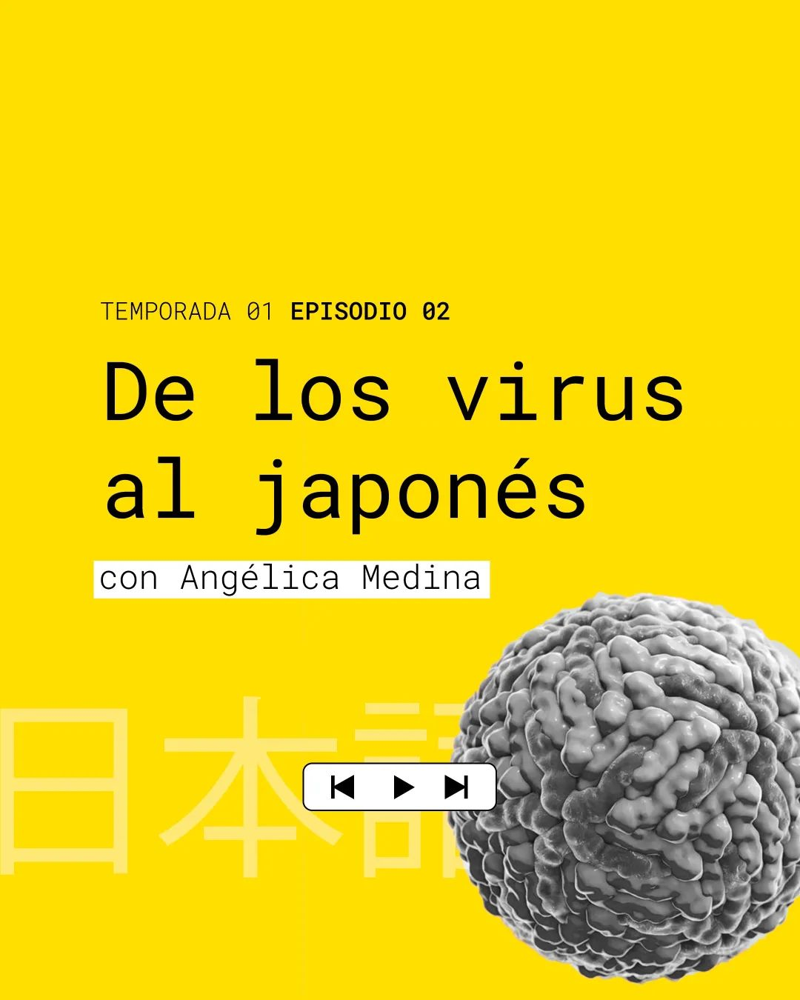

02 - De los virus al japonés
Angélica Medina
Irina Formoso
Rubén Rojas ![]()
Luis Montilla

00:10 Hola, mi nombre es Irina Formoso y quiero darles la bienvenida a De Esto No Hay Tesis, un podcast donde hablaremos de ciencia, pero también queremos chismearle la vida a los científicos. ¿Cómo es su trabajo?
00:22 ¿Cómo es su día a día? ¿Por qué lo hacen? ¿Cómo llegaron hasta ahí? Como este podcast empezó en pandemia, nos pareció ideal que nuestra primera entrevistada fuera María Angelica Medina, una viróloga de la Universidad Simón Bolívar de Caracas, Venezuela, que se encuentra actualmente haciendo su doctorado en la Universidad de Florida.
00:41 Sin embargo, debo advertirles que este episodio se grabó hace mucho tiempo, donde ni siquiera teníamos una vacuna para el COVID, pero otras cosas sí siguen siendo muy vigentes. Por eso, tómense este episodio como un poquito tipo viajar en el tiempo a través del corona.
00:58 También hablamos de sus hobbies y de cómo la música en japonés le da la fuerza para trabajar en su doctorado. Bueno, entonces tú trabajas ahorita con virus, pero yo quiero saber cómo se te ocurrió eso.
01:13 O sea, porque muchos biólogos cuando son chiquitos quieren estudiar animalitos o planticas y tal. Pero cómo fue tu camino? O sea, tú estabas en bachillerato y tú ya sabías eso.
01:24 Conmigo pasó, yo quería ser veterinaria cuando era de colegio. Prontamente me di cuenta que no podía manejar a un animal en dolor y por cirugías y cosas así. Entonces lo que pensé fue bueno, que es lo siguiente, más relacionado posible a animales.
01:43 De hecho, cuando yo empecé a pensar en yo quiero ser bióloga, yo quería estudiar animales. Luego en bachillerato, cuando comienzas a ver clases como de genética, no necesariamente biología molecular, creo que es más que todo herencia.
02:00 Sí, que sí, las leyes de Mendel y eso.
02:03 Las leyes de Mendel, ahí fue cuando me interesé como que, wow, hay un mundo por detrás. Entonces cuando fui a la universidad a estudiar mi pregrado, lo que yo estaba enfocada era genética, genética, genética humana.
02:17 Es típico que tú empiezas en tu carrera y no estás seguro y eventualmente te das cuenta, pero bueno tú no es cuenta que efectivamente siempre te gustó la parte genética. Pero entonces te pregunto ¿tú nunca tuviste dudas?
02:28 ¿tú nunca dijiste wow? ¿estás demasiado difícil para mí? ¿me quiero cambiar a bacterias? ¿quiero volver a los animalitos? o sea siempre estuviste segura de eso.
02:36 Lo que pasa es que genética puede ser bastante amplia. Honestamente, la primera materia ya en la universidad que yo vi donde veía genética fue microbiología porque yo tuve que ver la materia de microbiología mucho antes de lo que estaba planeado en el pensum.
02:55 ¿No seguiste el pensum como era previsto? ¿No?
02:59 No, ¿qué pasa? Bueno, tal vez uno cuando está en el colegio uno tiene esta imágen de que los científicos pues son unos genios y tienes que saberlo todo y eres súper inteligente y no puedes tener ningún error nunca.
03:13 Por lo menos eso era lo que yo tenía en el cerebro. Y cuando entré a la universidad donde hice mi pregrado mi primer semestre fue bastante difícil para mí como ajustarme a saber estudiar más allá de si soy inteligente o no.
03:28 El primer semestre me terminó quedando matemática uno. Eso descuadro el resto de mi pensum y yo en mi cerebro planificador estaba
03:39 Volviéndote loca.
03:42 En mi cerebro me estaba volviendo loca diciendo, ok yo necesito arreglar esto, ¿cómo hago para volver a caer pensum otra vez?
03:50 Cuando vi la materia de microbiología que venía acompañada del laboratorio ahí quedé yo enamorada porque ves todo lo que genética de bacterias y muchos conceptos básicos de genética se dan en microbiología.
04:05 Entonces digamos que gracias a que tu clavaste en Matematica 1, raspaste en Matematica 1, es que estás estudiando virus ahorita.
04:11 Exacto
04:15 pero yo creo que tú estabas como necesitando eso de ver las materias que te llamaban la atención, como de relacionadas genéticas porque tú ya sabías que te gustaba eso.
04:24 Sí, yo creo que tienes toda la razón, porque uno ve un año completo, materias que son completamente necesarias para tu carrera, pero no te dan la motivación, tú como de biología, querer ver animalitos y todos estos mecanismos interesantes, no quieres estar viendo política 1 o política 2, política 3, y que sí, matemática 1, 2 y 3 y 4.
04:46 ¿Tú lo que quieres es estar, pues, en el ambiente de la célula? ¿Qué pasa dentro de la célula?
04:52 Y, claro, uno viene con ese ímpetu del colegio queriendo estudiar lo que le gusta y uno lo que se llevaba era golpe tras golpe estudiando matemática y física. Pero la verdad es que yo personalmente siento que esas son materias como tú dijiste súper importantes para el desarrollo científico.
05:08 Porque, por ejemplo, matemática es lo que de verdad te enseña a pensar y a buscarle solución a los problemas. Así como física, entiendes el mundo desde un punto de vista diferente a química. Y creo que al final todo eso se compenetra súper súper bien en lo que es, por ejemplo, genética o microbiología.
05:27 O fisiología. Física y matemática completamente relacionados en fisiología de plantas, fisiología animal. Lo que pasa es que uno cuando es estudiante quiere quejarse.
05:41 Y bueno, ya que quizá vamos a saltar un poco de esto, ya que hemos mencionado mucho microbiología y genética y tal, y yo como el físico de esta conversación, quisiera que me explicara un poco la diferencia entre estas dos cosas, porque has hablado de todo micro, me dices que tú haces virus, después dijiste algo, no, porque no te vas por bacterias, no, yo como que bueno, hay, ¿cuál es la diferencia?
06:00 Entonces quizá explicame un poco, esto es claro, y ve la diferencia entre genética, microbiología, hablame un poquito de la rama de la biología que hay dentro de tu área en particular.
06:11 Ok, tal vez puedo explicar eso en ese como camino de cómo fui cayendo yo en la biología. Al principio yo quería estudiar genética, que es entender cuál es la información que está dentro de tu célula, es decir el ADN, que dice cómo van a ser tus proteínas, es decir cómo vas a terminar siendo tú.
06:32 Por ejemplo, qué rasgos de tu papá y qué rasgos de tu mamá van a terminar siendo expresados en ti. Ok.
06:39 O sea, dirías que la genética es como leer el manual de instrucciones que tiene un organismo. O sea, como aquí se va a hacer esto, aquí se va a hacer lo otro, esto se regula así, etcétera.
06:50 Exacto. Este se va a ver de color azul, este se va a ver de color morado y así.
06:56 pero dijiste proteínas y yo cuando piso en proteínas solo pienso en pollo y carne, en la merengada después del gimnasio, ajá, entonces cuéntame cómo es eso que las proteínas determinan cómo vas a hacer, o sea cómo vas a hacer tú que es una proteína en el contexto rapidito y como si yo tuviera cinco años, que en términos de biología, los tengo.
07:18 Sí, las proteínas se van a ver de diferentes formas, pero tú llamas a un pedazo de pollo, a tu batido de proteína como proteína, porque contiene esos bloques básicos para la formación del pedazo de pollo, es decir, los aminoácidos.
07:37 Ok, pero entonces el ADN, que tiene estas palabras sofisticadas, adenina, citocina, guanina, ¿eso son proteínas o no?
07:48 creo que es como que depende de qué tan tipo si te vas hacia los átomos, si vas pelando las capas hacia atrás de qué tan específico quieres ser, pero tienes las bases nitrogenadas que van a ser el ADN, tienes diferentes bases nitrogenadas que van a ser el ARN, el ARN tiene muchísimas funciones, pero la más común es como que ser el mensajero o como que dar la información entre lo que está guardado en el ADN que es como que tu biblia de mira aquí es exactamente la receta de cómo se hace esta proteína viene el ARN, lee esa receta y dice ok entonces tengo que agarrar todos estos aminoácidos y unirlos de una manera específica para crear la proteína que se va a dar por ejemplo en una situación básica, la señal como para poder tener metabolismo celular.
08:49 Ok, para que la célula responda a cierta interacción, necesita estas proteínas.
08:55 Exacto. O sea, algo básico. Tu cerebro lo que consume es glucosa.
08:59 Ok, que es como una forma de azúcar.
09:01 Exacto. Una proteína sería el receptor de la glucosa en el cerebro. Lo que permite que la glucosa entre al cerebro, ¿verdad? Para que sea metabolizado dentro de la célula, eso es una proteína.
09:16 para que el cerebro pueda usarlo para otra cosa. O sea, la glucosa en este caso sería como la gasolina. Y luego la proteína que está en la membrana del cerebro es lo que le dice, bueno, mira, traeme esa gasolina para dentro que la necesito para prender el carro aquí.
09:32 ok, ok
09:34 Entonces, ese concepto de proteína que es algo tan específico como dejar pasar a la glucosa, lo puedes pues extrapolar hacia cosas más complejas.
09:46 wow mira esto suena súper súper complejo pero te hago una preguntica, o sea tú esto lo aprendiste para tu tesis o tipo son cosas que fuiste acumulando a lo largo de tu carrera porque suena que o sea tienes un dominio del tema súper extenso.
10:01 creo que lo vas acumulando a lo largo de la carrera y muchas cosas van a ser click en tu cerebro ya haciendo tu tesis porque a medida que vas acumulando todas estas materias que vas pasando pues vas a entender no solamente la diferencia entre que es el ADN, qué es una proteína si no te das cuenta que hay diferentes microorganismos hay diferentes organismos número uno verdad o sea un mamífero es diferente de un cnidario
10:33 ¿Un qué? ¿De un qué? ¿Quién es ese?
10:38 Un mamífero es diferente de un insecto.
10:42 ¿Un cnidario es un insecto?
10:43 no, no, no
10:44 yo quiero que me explique es que es un cnidario, quiero que me explique es que es un cnidario por que quedé así, me sonó a minotauro.
10:54 Los cnidarios son corales, medusas, todas esas cosas, ¿no?
10:57 ok ok
11:00 con Rubén. O sea sí, los cnidarios son unos organismos marinos que son un grupo aparte porque ellos tienen unas células perdón que literalmente son en forma de nido o sea como el nido de un pájaro. Entonces o sea en burda particular son células que tienen unos arpones.
11:16 Son las que te pican cuando una medusa, te golpeas con una, te roza. Eso es lo que te pica pues.
11:22 por ejemplo entonces bueno digamos como que un grupo más o menos diverso pero todos tienen común que tienen esta célula entonces bueno, lo que tienen célula es en forma de nido: los cnidarios, pero creo que no sé si me respondiste la pregunta, que me corrijan, los muchachos o sea en algún momento te dije esta berro esto es muy difícil, yo no quiero estudiar virus
11:41 El Gocho dijo, ¿por qué tú sabes tanto de esto? ¿Como lo fuiste aprendiendo durante toda la carrera?
11:47 uno va acumulando conocimientos a medida que vas avanzando en la carrera, a medida que ves nuevos materiales y la razón por la cual terminé estudiando virología es porque me inscribí en la materia de virología general.
12:00 Porque claro, creo que uno creciendo, una persona regular siempre va a saber que hay algo que te hace estar enfermo a veces, por ejemplo, cuando te da gripe y tú sabes que este es un gérmen, no, tal vez no estás seguro si es una bacteria, si es un virus, pero tú sabes que hay cosas infecciosas que te hacen estar enfermo.
12:23 El sereno
12:23 Cuando ves la materia de virología general es cuando me doy cuenta que dentro de el mundo de los virus existe pues mínimo siete clasificaciones de virus diferentes y hay cosas muchísimo más simples que los virus que son simplemente proteína y genoma como solo ARN infeccioso o solo proteínas infecciosas, o sea, cosas muchísimo más pequeñas que los virus que también pueden causar enfermedades.
12:57 ¿y qué fue lo que te gustó tanto de eso? ¿qué fue lo que dijiste? no, esto es lo que yo quiero hacer, esto es increíble
13:04 Creo que porque va de la mano muy bien con genética y como un fenotipo específico, una enfermedad. O sea, yo empecé a estudiar genética humana relacionado a enfermedades cardiovasculares y quería… me llamaba la atención el mundo de la salud pública y de cuáles poblaciones están enfermas ahorita, cuáles poblaciones van a estar enfermas cuando están envejeciendo y cosas así.
13:36 Luego, cuando veo la materia de virología general, que tienes que tener claros y bien estructurados conocimientos de genética para aplicarla, para entender los virus y otra cosa muy, muy interesante que me enamoró del mundo de los virus es que nosotros podemos usar a los virus como una herramienta para tratar diferentes enfermedades como cáncer, por ejemplo, o diabetes.
14:04 Bueno, primero creo que eres la primera persona que dice que ama el mundo de los virus, específicamente en el año 2020, donde estamos en una pandemia. ¡Gracias!
14:14 Pero claro, los virus siempre van a estar, siempre van a evolucionar porque como dije son tan simples, es simplemente proteína y genoma y ese genoma puede ser tanto ADN como ARN.
14:30 Mhm.
14:31 En este problema de la pandemia, puedo decir que los virus que traen un poquito más de complejidad al momento de decir pues ser una pandemia, o sea, que pueden mutar y crear más problemas o tal vez no crean más problemas, sino que simplemente la enfermedad se va pues diluyendo, volviendo más simple.
14:51 El ARN es una molécula mucho más delicada que el ADN, porque como habíamos discutido antes, el ADN es ese manual así perfecto y escrito que tiene la receta, el ARN es ese mensajero, entonces como que no es tan estable, no se mantiene por mucho tiempo de la misma manera.
15:13 Entonces por eso es que cuando ves una situación como la pandemia en la que estamos pasando por este año, que tanto lo síntomas como la cantidad de población infectada, va a cambiar de país a país, y pues ahorita que estamos viendo la vacuna, vas a ver que posiblemente necesitemos vacunas específicas para diferentes países, porque la composición del virus va cambiando poco a poco.
15:37 Y es similar o lo podemos como entender más fácil cuando pensamos en el virus de la influenza, que es un virus que siempre ha existido, ¿verdad? Toda la vida nos ha dado gripe, pero es muy difícil tener una vacuna para el virus de la influenza, porque pues por eso es que me enamoro de los virus, es que cada uno es tan diferente.
15:56 Pero, ajá, una pregunta, pero me estás diciendo que eso ocurre porque estos son virus de ARN, ¿no?
16:02 es más común tener mutaciones y cambios. No significa que los virus de ADN no ocurre, ocurre menos.
16:11 Y estas dos cosas ADN y ARN llevan por así decirlo, información genética dentro de la célula. Entonces, bien sea, puede ser por ADN, la replicación, la manera en que tiene hijitos, puede ser a través de la ADN o a través de la ARN dependiendo del tipo de virus o de bacteria o de lo que sea.
16:31 Pueden ser esas dos maneras.
16:33 Esa pregunta está muy bien, muy buena, solo que tengo que aclarar un poco. Organismos y microorganismos solo pueden tener como genoma ADN. Los humanos, los animales, las bacterias solo tienen como genoma, ellos guardan su información en forma de ADN, porque es la manera más estable.
16:56 Los virus, su genoma puede ser ARN o ADN. No ambos al mismo tiempo, hay virus de ADN, hay virus de ADN.
17:06 Entonces me estás diciendo que como los virus no están vivos, entonces utilizan…
17:11 Nunca dije que no están vivos, dije que son elementos biológicos.
17:18 yo sé que este es un tema sensible pero no entiendo por qué, es decir, escojamos uno y ya, ¿qué pasa con eso? cuéntame, ¿por qué eso es una polémica en el mundo de biología?
17:30 Porque el concepto de vida es muy difícil para nosotros entender o explicar. O sea, si quieres simplificar el concepto de vida, ¿qué? ¿A dónde llegas? ¿No? ¿Qué significa estar vivo? ¿Respirar?
17:48 Pero claro, esto se vuelve un… porque para mí, con mi mentalidad física, creo que es un problema de definición, es cuestión de ponernos de acuerdo y decir, bueno, ¿esto significa estar vivo o esto significa no estar vivo?
18:00 Pero mi pregunta es, la cosa se complica… Exacto. Primero, estoy en lo correcto, no. Y segundo, quizá este tema es complicado porque entramos en una discusión política o religiosa. ¿Hay alguna rama de eso o para nada?
18:15 Para nada. Es simplemente que de verdad no tenemos idea de cómo definirlo.
18:18 En mi opinión creo que no entramos a una discusión religiosa ni política, creo que es una cuestión de… filosóficamente, ¿cómo simplificamos el concepto de vida? ¿Qué significa estar vivo? Porque si me dices que estar vivo es que tienes que tener, no sé, un corazón latiendo, entonces, ah, los árboles no están vivos?
18:39 Y si me dices que es, no, tienes que fotosintetizar, entonces ¿qué un hongo está vivo? Los hongos no fotosintetizan, ¿verdad? Ok.
18:53 No, no.
18:56 Yo creo que no, porque no son verdes, ¿no?
18:59 No, no tienen que ser a juro verdes.
19:01 ¿No tiene que ser verde?
19:02 O sea el tema Ruben también es como que en biológica el tema, o sea no sé, tu viste Jurassic Park cuando…
19:09 por supuesto
19:11 La vida siempre encuentra la manera. O sea, siempre en principio digamos la solución fácil que tú dices, es como que bueno vamos a definir qué es vida y ya el problema es que tú defines un conjunto de características y luego alguien encuentra una forma de vida que no cumpla alguna.
19:26 Entonces, ah bueno, vamos a redefinirla y vuelve a pasar lo mismo. Entonces, ¿qué pasa?
19:33 la frontera está muy difusa.
19:35 Correcto, los virus no son células, sino son como te decía en María Angélica, una capa de proteínas y un ácido nucléico adentro y bueno entonces la gente dice bueno obviamente no está no está vivo porque no es una célula, no tiene metabolismo, no tiene esto que hay hoy.
19:52 Luego llega otro conjunto de personas ese es un lado digamos simplificando y luego tiene otro grupo de en otro bando que te dice bueno mira pero ellos bueno tienen ácidos nucleicos como todos los seres vivos simplemente son extremadamente simplificados.
20:09 Y se reproducen, si tu concepto de vida es que te puedes reproducir, un virus se reproduce.
20:15 y de hecho pueden ser estudiados del punto de vista de selección natural, o sea, ellos evolucionan, tienen mutaciones, entonces claro hay quienes dicen, bueno, o sea, no, vamos a utilizar un término más neutral como una partícula biológica o una cosa, hasta que nos pongamos acuerdo.
20:33 Entonces ahorita muchos biólogos están mirando a la física, por ejemplo, usar teoría de la información para simplificar, bueno, física, matemática, para tratar de abstraerse un poco de todas estas cosas, decir bueno, tiene célula, tiene pared, tiene esto o aquello.
20:49 Y bueno, digamos, hacer una definición quizá un poco más abstracta que pueda ser generalizable. Retomando un poco, María Angélica que te tengo dos preguntitas. Una curiosidad, tú nos puedes contar cuál es la diferencia que por justamente lo estás mencionando, entre la gripe y el resfriado, sobre todo en términos de la gripe estacional.
21:12 Son dos grupos de virus diferentes. La influenza A y B es lo que te da la gripe, esa gripe que te mata por siete días. Los síntomas son un poquito diferentes, pero la influenza te pega muchísimo más fuerte.
21:29 Para la influenza tenemos vacunas estacionales. Para el resfriado común, los síntomas son mucho más suaves. Y como el grupo de virus que puede causar un resfriado común es un poquito más amplio, son varios.
21:44 De hecho, de entre ellas están los coronavirus.
21:48 No hables de eso
21:50 No tenemos como que una vacuna o algo así. Pero lo que quiero decir es que sí, los coronavirus, claro, con este en específico, pues todos estamos vueltos locos. Pero sí, muchos de ellos causan el refriado común.
22:06 Incluso hay coronavirus específicos para perros de los que hay vacuna.
22:13 estabas comentando que los virus, o sea trabajar con virus de ARN es más complicado son más sensibles que se o sea se implica que es o sea es mucho más difícil hacer experimentos con ellos y con cuáles trabajas tú
22:28 Yo trabajo con virus de ARN. No diría que es más complicado, simplemente es diferente. Tienes que pensar pues tus experimentos, la forma en que los tienes que hacer son diferentes. A ver, los virus de ADN van a tener un ciclo de vida diferente a un virus de ARN.
22:51 Hay varios virus de ADN que pueden insertar sus genomas en el genoma de la célula. Los virus de ARN son como… su infección, viene y se va. Y el genoma del virus no necesariamente se queda en la célula.
23:07 Para algunos de los de ADN se queda en la célula. Y por eso es que el herpes bucal tiene pues ciclos o temporadas en las que lo tiene y luego se va. No significa que ya la infección no la tiene más nunca, es que el virus sigue allí, porque insertó su genoma dentro de la célula.
23:23 Y lo que está es como que esperando a que sus defensas bajen un poquito.
23:28 O sea que nosotros dentro de nuestros genes tenemos pedacitos de virus que o nos han infectado a nosotros o a nuestros antepasados.
23:37 Sí.
23:38 Y entonces hay veces que no se activan y no pasa nada, pero otras veces se pueden manifestar.
23:42 Sí. Y hay trabajos muy interesantes haciendo estudios de genoma y como evolución también en los que se ha visto que parte del material genético que nos forma ahora y forma por ejemplo células del cerebro proviene de virus.
24:08 Ok, ok, este tema me pareció demasiado interesante, así que voy a dar una pausa científica aquí. Estos pedacitos de material genético que provienen de un virus y se meten en nuestro genoma, se conocen como retrovirus endógenos, o ERV.
24:23 Y en humanos pueden ser hasta un 8% de nuestro genoma. Pero, calma, ya va, no se me vuelvan locos, esto es algo súper natural y que ha ido ocurriendo desde hace millones de años, no es como que te va a pasar a ti ahorita.
24:36 Y que sepamos hasta el momento, básicamente ellos no están activados ni se reproducen ni nada, sencillamente están ahí en nuestro ADN. Pero, el hecho de que se insertaran en el genoma, pudo causar cambios que promueven o participan en otro tipo de procesos, que pueden ser tanto buenos como malos.
24:54 Por ejemplo, un fragmento ERV parece tener relación con la enfermedad de esclerosis lateral, se acuerdan la del Ice Bucket Challenge. Pero, por otro lado, en primates, uno de esos fragmentos en la placenta promueve la regulación del estrógeno durante el embarazo.
25:11 Bueno, esa fue nuestra pausa científica, volvamos a nuestra entrevista, pero un poquito más relajados.
25:19 Mira una pregunta, entonces tú, cuando tú llegas al laboratorio en la mañana ¿qué haces tú?, tú te pones tu bata, te haces tu café, y entonces, ¿cómo es el día a día de Angelica Medina?
25:28 Misconception o aquí diferencias entre las ramas de la biología. Ustedes es como…
25:35 No te pones abta
25:37 No no no no no no no no no
25:40 No toma café, no puede ser
25:43 Los ecólogos, pues, puedes usar la bata tomando café dentro de tu laboratorio, con tal de que tus muestras estén por allá. En un laboratorio con virus o agentes infecciosos, tenemos espacios completamente, físicamente separados por los cuales, pues, no puede, no puede haber comida, obviamente, porque es peligroso para ti, no solamente para tus experimentos, sino tú podrías estarte infectando accidentalmente.
26:12 Dios mío, yo quiero preguntar, ¿te ha enfermado alguna vez o conoces de alguien que sea ya enfermado? ¿Pero que puede pasar? ¿Puede pasar?
26:20 Puede pasar claro, claro, porque tú creces 500 mililitros, o sea, medio litro de virus y si tú accidentalmente te botas ese líquido encima que no debería pasar porque pues para eso está la campana de flujo laminar y tienes tus guantes, tienes tu bata, podría pasar un accidente.
26:41 Ya va, ya va, para un momento, para un momento. Yo necesito preguntar, o sea, ¿cómo ustedes trabajan? ¿Cómo se ve un virus en el laboratorio? ¿Qué es eso?
26:51 Y antes de eso, que va de la mano de lo de Rubén, ya va, dijiste que usted tiene medio litro de sangre con virus ahí en un recipiente en tu laboratorio
26:59 ¿A quién mataste?
27:01 Epa. OK ¿Cómo cultivamos nosotros los virus? por ejemplo, en mi laboratorio, porque deben haber otros laboratorios donde pues es diferente. Otra vez en biología todo depende para los viruses que nosotros usamos en el laboratorio, como dengue, fiebre amarilla, Zica.
27:24 Usamos células de mosquito. Las cultivamos en platos. Infectamos a esas células con un inóculo, o sea, una muestrita pequeña, un pedacito chiquitito, un volumen pequeño de virus. Y esperamos ciertos días para que cuando la mayoría de las células estén infectadas, ellas van a generar, pues, un nivel exponencial de virus.
27:51 Y tú vas a con el virus, va a salir de la célula y como que nadar en el líquido en el que las células crecen. Ese líquido que contiene el virus es lo que nosotros usamos para hacer investigación, para infectar otras células, para generar experimentos, para purificar el virus.
28:12 Entonces, ese líquido es lo que nosotros filtramos, porque como dejamos a las células crecer por varios días, algunas van a morir. Y necesitas pues tener el líquido lo más limpio posible, para generar tus experimentos.
28:28 Ok, y en este caso, los virus que mencionaste son transmitidos por un mosquito. Y creo que por eso es que usas células de mosquitos. Sí. Pero si por ejemplo quieres evaluar el efecto de virus en células humanas, ¿cómo haces eso?
28:43 PuesYnosotros podemos generar virus tanto en mamíferos o en células humanas como mosquitos, pero dependiendo del ciclo de vida natural o de las características de tu virus que estás estudiando, tienes que adaptar cómo modelas ese ambiente en el laboratorio.
29:06 Es decir, si tú estás estudiando virus que afectan el tracto respiratorio, tú vas a querer crecer ese virus en células pulmonares, por ejemplo, en lugar de células de hígado que tal vez tu virus no puede infectar.
29:24 ¿Y cómo consigues esas células? ¿cómo? tu vas por ahí le pides Rubén, dame un poquito de tus células ahí de la nariz
29:31 Existen compañías de biotecnología que venden esos reactivos.
29:38 Osea te metes en Amazon y pides un kit
29:42 No a Amazon, pero en el mundo específico de la biología, así como existen las tiendas para maquillaje profesional de las personas que hacen maquillaje para películas, existen tiendas específicas para reactivos biológicos.
30:03 En verdad mi pregunta iba más hacia las células de Henrietta.
30:10 Marica no te recomiendo no vayan para allá Irina
30:18 O sea, sí puedo decir que las células, todas las células las obtuvimos por lo menos células de humano de una persona, de un paciente, donde un doctor que obviamente está calificado para tomar la muestra puede, a través de una biopsia, aislar a las células del tejido en específico y luego puedes o mantenerlo como cultivo primario, es decir, células, un cultivo de células que viene del paciente o inducir un proceso que se llama inmortalidad, básicamente inducir cáncer en ese tipo de células para generar una línea celular.
31:01 Estás diciendo que el cáncer es inmortal
31:05 Puedes usar esa palabra porque lo que causa la célula se replique, se duplique, incontable número de veces. Así como los tumores pues crecen. Claro, un tumor, por ejemplo, si está, pues, lamentablemente, en una persona que tiene cáncer, el tumor va a crecer tanto como sea posible o tenga flujo de sangre.
31:29 Cuando ya el tumor sea mucho más grande que el flujo de sangre va a empezar a morir. Si tú sacas esas células de tumor y las cultivas y las, les das espacio, les das comida, sabes las, sacas una muestra y las siembres en otro plato, esas células van a seguir creciendo por siempre.
31:46 Wow.
31:48 ¿Cuál es el rollo con las células de Hela?
31:56 Bueno, estuvimos como 5 minutos hablando sobre este tema, así que no podíamos obviar este chisme científico. Henrietta Lacks fue una afroamericana que lamentablemente sufrió un horrible cáncer de cuello de útero y falleció en 1951 con tan solo 31 años.
32:14 Los médicos tomaron muestras de tejido y descubrieron que sus células eran muy raras, crecían super bien en el laboratorio, podían reproducirse rápido y vivir por mucho tiempo, por lo que básicamente eran inmortales, siempre se iban a poder sacar más y más.
32:31 Esto no sonará como mucho, pero fue un golazo para el desarrollo de la medicina, una línea celular de células de humanos. Al poder producirse industrialmente, se podían usar en incontales investigaciones, como por ejemplo polio, cáncer, sida, radiación, la toxicidad de los maquillajes y mira, hasta han sido enviadas al espacio.
32:56 En fin, gracias al uso de estas células se han salvado incontables vidas. Entonces, ¿cuál es el problema? Bueno, las muestras se obtuvieron sin el consentimiento de Henrietta, porque bueno, era 1951 y no se acostumbraba a pedir consentimiento ni era ley ni nada.
33:18 Su familia tampoco sabía, así que se llevaron tremenda sorpresa en 1975, cuando vieron que se estaba haciendo un poco de plata con las células de Henrietta. No les preocupaba solo el dinero, sino que además fue usada sin su consentimiento y que esa información genética también hablaba de ellos, de su propia genética.
33:39 En fin, era un dilema moral bien fuerte. Al final, después de muchos años, de muchas peleas, parece que se ha llegado a acuerdos con la familia para que ellos tengan algo de control sobre el acceso del genoma y para que sean reconocidos como parte de los estudios.
33:54 Además, se han hecho numerosos reconocimientos en universidades a la propia Henrietta. Continuemos con la entrevista.
34:03 Claro, volviendo un poco al tema. Entonces ¿cómo? o sea tú como estás echando un cuento sobre bueno todas las medidas que tú tienes que tomar personalmente cuando vas a trabajar con eso, pero ¿cómo por ejemplo evitas que haya un accidente que esos virus escapen, que se te contagia algo y termines como en una película de terror? ¿Cómo son esos laboratorios?
34:23 Cuando vas a trabajar en un laboratorio donde hay reactivos peligrosos, tienes que pasar por entrenamiento para entrar al laboratorio. Cuando te tienes que quitar los guantes, los guantes son de uso único.
34:39 Exacto. Cuéntame algo que no deberías hacer cuando estés trabajando.
34:43 Comer dentro del laboratorio
34:45 OK, OK, algo menos obvio.
34:46 Algo menos obvio.
34:53 Algo menos obvio es estar, tienes que estar consciente de dónde están tus manos y qué han tocado. Tus manos van a tener guantes, pero debes cambiarlos constantemente si estás trabajando con el virus.
35:08 Para evitar, no puedes tocar las manillas de las puertas con los guantes que estabas usando mientras estabas trabajando con el virus. Eso es una regla. Por ejemplo, si yo voy a infectar células con el virus del Zika, tengo mis células, tengo el virus dentro de la campana, estoy vestida con mi traje de protectivo, o sea mi bata de laboratorio, tengo mis guantes puestos en los laboratorios de virología.
35:34 Las batas de laboratorio tienen muñequeras que van como por encima de tu mano y por encima de esa muñequera está el guante, no hay piel expuesta dentro de la campana. Entonces, si yo infecto las células, termino mi experimento. Tengo que cambiar mis guantes si tengo que salir.
35:54 Y todo eso me dices que ocurre como dentro de una campana. Yo he visto unas campanas como esas que le metes los guantes hacia adentro.
35:59 Bueno, dependiendo del nivel.
36:01 ¿Cuándo utilizan esas, cuándo, exacto, cuándo utilizan esas, eso con Zika utilizaría esas campanas o no, o con Ébola, una cosa así?
36:09 Bueno, en la biología existen niveles de seguridad biológica, que van del 1 al 4. Estos niveles de seguridad, mientras más alto, es más peligroso.
36:23 ok
36:23 Y dependiendo de los síntomas que causa la infección del virus con el que estás trabajando, pues va a ser clasificado como nivel 2, nivel 3 o nivel 4.
36:33 Ok, lánzame unos ejemplos.
36:34 El ébola sería nivel 4 porque causa síntomas que es una hemorragia instantánea, es muy fuerte. Tu vida peligra.
36:45 y ese va en la campana cerradita.
36:48 No solamente tienes esa campana así, tienes un traje completo que tiene presión negativa como de astronauta. Básicamente en el nivel de seguridad número 3 pueden haber virus como el VIH en el que mira tal vez no ves los efectos inmediato pero es muy riesgoso trabajar y claro
37:09 se termine por aire el VIH.
37:13 No! Sangre, contacto por sangre
37:14 Ah, casi cae, casi cae. Era una prueba.
37:18 ¡Ajá! Te estaba probando.
37:20 Los virus con los cuales mi laboratorio de trabajo están dentro de nivel 2 o nivel 3. De hecho tiene tres áreas de trabajo, tiene el área de nivel de seguridad 1, que es en donde haces tus experimentos generales, donde allí no hay virus, solo evaluación de ya las proteínas ya procesadas, cosas así, o el nivel 2.
37:45 Allí trabajamos con Zica, Dengue, Fiebre Amarilla y usamos en el nivel 3 aquellos que causan encefalitis.
37:54 Y el coronavirus, por ejemplo, el coronavirus que estamos teniendo este año, es nivel 3. Bueno, y trabajar con organismos vivos. Claramente es un problema porque uno tiene que, como tú dices, tienes que esperar unos días a que las células crezcan y luego infectar y luego esperar que eso se incube.
38:10 Entonces, tú en tu día, día o en tu semana, ¿cuántas veces vas al laboratorio? ¿cuántas veces haces experimentos? ¿Qué otras cosas haces tú? O sea, tú, a ti te pagan por estar todos los días en el laboratorio, el lunes a viernes, o cómo es tu día a día.
38:27 Bueno, siendo estudiante de doctorado dependiendo de la universidad vas a tener diferentes responsabilidades. En Florida State University los estudiantes de doctorado dependiendo del semestre también tienen responsabilidades de ayudar dando clases a los estudiantes de pregrado o corrigiendo examenes, cosas así.
38:49 Si yo estoy solamente enfocada en investigación, es decir, no estoy dando clases, yo preparo, reunifico mis experimentos a lo largo de la semana. La universidad, pues tú tienes unas horas específicas por las cuales eres compensado, pero como tú misma dices, en el mundo de la biología los tiempos no son tan específicos de las nueve de la mañana a las cinco de la tarde y todos tus experimentos van a entrar en esa hora perfecta, yo trato de planificar lo mejor posible para tener una vida balanceada, de poder ir, trabajar, volver a la casa, comer, salir con mi perro y cosas así.
39:31 Pero la mayoría, honestamente, la mayoría de los estudiantes de doctorado van a trabajar de lunes a lunes.
39:43 ¡Wow!
39:43 incluso los fines de semana, vas a tener que entrar así sea por dos horitas a estar pendiente de tus experimentos o a colectar muestras. En biología no hay como una estructura muy estricta de no, después de las cinco ya no, ya no puedes entrar al laboratorio, es mira, tal vez tengo que colectar muestras hoy a las ocho de la noche, pero resulta que a las cuatro pues estoy libre, entonces puedo almorzar allí, cosas así.
40:12 ese sentido entonces tienes como que más libertad pero a la vez tiene como más responsabilidad
40:18 Es un buen balance entre tener libertad y responsabilidad porque podría ser lo más libre posible, pero tu investigación lo va a ver. Creo que es bastante de auto motivación. Tienes que crear tus experimentos, un plan que te sirva para ti y tu estabilidad tanto emocional como en tu vida diaria y que le sirva a tu proyecto para poder ver progreso.
40:48 Tú estás allí durante tus años de doctorado para entrenarte a ti mismo. Estás como que velando por ti, tu profesor obviamente, mientras más data, más contento, pero él no va a estar detrás de ti a las 7 de la mañana hola mira el lunes.
41:06 Claro, o sea, tú puedes ser más flexible, decir como no, mira el lunes, voy a ir después del mediodía, porque yo fui sábado y domingo a recoger esto, entonces no tengo que ir a hacer estos experimentos tan temprano, o sea, es por ejemplo.
41:18 Sí, tú haces tu propia estructura del día a día. Obviamente, creo que uno tiende a ponerse mucho más trabajo del que deberías.
41:31 una preguntita, entonces luego cuando tú sales del laboratorio o esas horas en las que no estás allí, ¿qué te gusta hacer? ¿Cómo te desestresas? ¿Cómo te olvides un rato del coronavirus?
41:45 Para mi tiempo libre lo que hago es salir a caminar o visitar parques nacionales, más que todo caminar con mi mascota, con mi perrita.
41:57 Y cuéntanos que te está leyendo un libro, estás viendo una serie.
42:01 Bueno, la última serie que vi fue la The Queen’s Gambit en Netflix.
42:05 ¡Ey, excelente!
42:06 ¡No spoilers!
42:07 Pero yo sé que además de ver series, yo sé que tú ves bastante anime y yo sé que tú hablas japonés. ¿Por qué?
42:17 Es todo el mundo me pregunto y específicamente gente de Japón, la mayoría de las respuestas de la gente va a ser porque quieren ver anime sin subtítulos o desean visitar Japón en algún momento o quieren trabajar en Japón.
42:32 Cuando yo empecé a estudiar japonés no es ninguna de las tres. Yo no veía anime cuando empecé a estudiar japonés, no quería visitar Japón y tampoco quería trabajar en Japón. Era como que necesitaba algo que me distrayera.
42:46 Siempre me había gustado aprender idiomas. Resulta que en la primera clase pues me enamoré porque es un idioma bellísimo.
42:54 Y ahora sí, ya quiere ver anime, ya quiere ir a Japón y saber que se me ha hecho.
42:56 ¡No! Sí, obviamente.
42:58 Obviamente, ya después fue como que, ok, ahora cuando voy a visitar Japón, por favor, donde me llueve el dinero.
43:04 ¿Tienes alguna recomendación de anime?
43:06 Bueno, los clásicos de Full Metal Alchemist.
43:09 Bueno esto no es anime pero mi Angélica me metió en la cultura Ghibli y amo las películas de Ghibli.
43:15 Eso es anime, es animación japonesa.
43:17 Eso es anime. Sí, todas las películas de Ghibli, obviamente. Por favor, sigan la carrera de Makoto Shinkai, que es el director de una película que en inglés se llama Your Name, la recomiendo 100%, y la segunda película que se llama Weathering with You, la recomiendo también.
43:38 Tremendo soundtrack.
43:39 Sí, no, sí, no, sí. Obviamente cuando estaba aprendiendo a hablar japonés, me imagino que porque son tan populares, comencé a escuchar música en japonés, la primera banda con la que caí fue Rad Wimps, que es una banda de como rock alternativo y…
43:54 O sea que si yo entro tu casa y tu te estas bañando, tu vas a estar cantando japonés.
44:00 No canto en la ducha, pero cuando estoy manejando, sí. Cuando necesito activarme un día, eso es japonés.
44:06 Me encanta.
44:08 Tu playlist para el laboratorio de japonés tu playlist, estás así trabajando activa en japonés, suena así como la intro de los anime.
44:15 para que se sienta como un anime, que está corriendo así como Naruto.
44:19 Por favor, que me voy a imaginar demasiado con la bata y la pipeta.
44:24 Lo que podemos sacar de esta conversación es que Angelica le encantan los retos y las cosas difíciles porque ella dice, bueno, estos bichos uno ni siquiera sabe si están vivos o no. Yo los quiero estudiar, los amo, son maravillosos.
44:36 Y me dice que bueno quiero aprender un idioma, voy a ir por japonés.
44:39 La cosa más diferente.
44:41 ¿Por qué te haces la vida tan complicada?
44:43 es divertido y pues qué es lo peor que pueda pasar
44:49 Y siempre puedes cambiar de rumbo, ¿verdad? O sea, a lo mejor entras en japonés y no te gusto mucho, pero luego probaste un poquito de chino y a lo mejor te gusto, quién sabe, sabe. Y lo mismo con estuar virus o bacterias.
44:59 O en lugar de querer seguir estudiando virus específicamente te puedes ir a la parte de epidemiología que es estudiar cómo nacen estas pandemias, dónde hay brotes, cómo se controla y pues la conexión entre el mundo de la medicina y la investigación.
45:15 Creo que una mentalidad científica muy importante es esa, que uno le gusta ir donde hay más desastre, donde hay más despelotes, como le decimos nosotros, donde hay más… donde la cosa está más complicada, entonces creo que resumo un poco la carrera de Angélica y…
45:32 O sea que en términos generales, ahorita estás estudiando cómo es el virus y cómo funciona y qué es lo que hace y en un momento de tu vida te gustaría ver como una especie de aplicación a eso, ¿no? ¿Tipo cómo detenerlo más rápido o dónde atacar para que ser más efectivos en controlarlo?
45:51 Exactamente. Mi proyecto es más que todo evaluando como infecciones dobles, por decir así. Por ejemplo, cuando tú te enfermas, tal vez tienes una infección bacteriana y luego te infectas con un virus.
46:04 ¿Cómo responde tu cuerpo a esta doble infección?
46:08 Viste los retos, no solo una infección y una infección doble es lo que quiero estudiar. Mira Angélica y una preguntita ¿Cómo? Porque tú nos comentas que estás haciendo ahorita tus estudios de doctorado. ¿Cómo llegaste tú allí? ¿Cómo tú estabas haciendo? Tú te decidiste, bueno quiero hacer un doctorado en virus en la Florida State University. ¿Cómo fue esa transición?
46:28 Cuando entré a la laboratoria genética humana, a la universidad de pregrados, a hacer mi tesis de pregrados, mis profesoras en ese momento fueron mi inspiración. Ambas tenían sus doctorados y la mayoría, todos los profesores, tenían un doctorado.
46:45 Como que ellas prendieron ese fuego de interés de, o que pues ser incluso más específica en lo que quieres trabajar siendo bióloga.
46:57 ¿Cuál dirías que es la diferencia de enfoque cuando alguien se hace un doctorado? ¿Cómo es la motivación de alguien que hace un doctorado? ¿Qué tan más complicado se vuelve? O explica un poco eso.
47:08 Creo que es una cuestión de motivación y preferencias personales. Creo que yo siempre fui una persona que, como curiosa, como me gusta ver e intentar cómo me va aquí. Quería un poquito más de tiempo para desarrollar mis habilidades técnicas y ver cómo, qué más me llama la atención.
47:25 Cuando entras a un programa de doctorado, eres bastante independiente, tienes mentores, sí, pero es básicamente tú moldeas cómo va a ser tu carrera.
47:37 Y continuando con eso entonces bueno una vez que termines este doctorado que quieres hacer, como qué opciones tienes tanto en el ámbito laboral como el ámbito académico.
47:48 Creo que podrías elegir lo que tu paciente llama, ¿no? Si te encanta pues tener un grupo de investigación, si te encanta dar clases, podrías irte hacia la parte de academia. Si estás interesado en algo como más directo en lo que haces tu investigación y ves tal vez el producto o tal vez el desarrollo de un proyecto poco más rápido, te puedes ir a la parte de industria, compañías de biotecnología o existen compañías que hacen investigación, no solamente para crear más productos para otras personas que hacen investigación, sino productos para sacar al mercado general como desarrollo de vacunas, por ejemplo.
48:28 Y en tu caso particular, ¿tú tienes alguna idea de qué hacer? O estás demasiado ocupada, ahorita mismo como para pensar en eso. Porque esta es la pregunta más jodiada por la gente de doctorado.
48:38 Creo que mientras más pasa tiempo en tu doctorado, más complicada se vuelve a responder esa pregunta, porque yo entré a mi doctorado pensando en seguir en la academia. Estaba muy inspirada en estudiar, en tener mi propio equipo de investigadores, en tener estudiantes que puedan generar tesis y cosas así.
48:58 Poco a poco me gusta más la parte de industria en la que, o sea, como que puedes ver que hay una necesidad de cierto producto en el mundo de la biología y estás tú con tu equipo haciendo investigación para generar ese producto.
49:17 Pero que digamos que lo que te ves haciendo es investigación, ¿no? Bien sea dentro del área académica y también puedes ir por la parte de industria, donde quizás un poco más directo, hay más dinero, pero digamos que lo que te estás, quieres mantener la línea de investigación.
49:32 Sí, definitivamente quiero seguir siendo investigadora.
49:38 Y te irías investigar a Japón si te dieran la oportunidad?
49:42 Sí, no, al mismo tiempo. Sí, por supuesto que sí, porque pues en Japón también son pioneros en muchísimas cosas de investigación de biología. Creo que sería una experiencia interesante, eso es lo que da nervios, no? Mudarse tan lejos.
50:00 Angélica ¿Qué le recomendarías tu ahorita a otra persona, a un estudiante pregrado que quiera seguir estudiando virus, a un estudiante de secundaria que diga, oh, yo quiero estudiar biología molecular? O a la Angélica de hace 10 años. ¿Qué le recomiendas? ¿Qué le aconsejas? ¿Qué le sugieres?
50:19 Hay que ser paciente. Creo que necesitas desarrollar bastante paciencia para entender que el progreso viene de diferentes maneras y es como que muchas veces estás enfocado en obtener, sí, esa meta ahorita ya mientras más rápido mejor.
50:38 Pero te tienes que enfocar en como que disfrutar el proceso, disfrutar el desarrollo de tu curiosidad.
50:48 ¿Cuáles sientes que han sido los momentos más difíciles de tu carrera o los momentos más bonitos? O sea, quiero que me dejes un par de situaciones o ejemplos. Y como que los momentos que tú dijiste, no, de verdad, esto es lo que es lo mío. Y los momentos donde tú dijiste, coye.
51:03 Bueno, los momentos en los que dije esto eso lo mío es durante el doctorado muchos programas van a tener algo que se llama como exámenes preliminares que es algo como para elegir o decir si vas a ser un candidato o si tal vez deberías modificar tu ruta para tal vez ser maestría o mirar tal vez puedes intentar otra vez y pues cuando yo pase por esos exámenes lo disfrute tanto leer y escribir y pues tener toda esta desarrollo de pensamiento crítico de buscar preguntas, hacer propuestas de experimentos que estaba como que inmersa en este mundo de infinitas posibilidades de investigación que yo dije sí esto es lo mío o sea esto es interesantísimo, tienes y puedes hacer lo que sea infinitas infinitas cosas pueden salir de un proyecto de una pregunta entonces es como que en todos esos momentos en los que yo puedo sentarme a pensar los experimentos que puedo hacer para responder una pregunta me confirmo que quiero ser investigadora creo que mis peores momentos es cuando desarrollo o diseño un experimento y resulta que yo estaba completamente equivocada.
52:27 Creo que es como que allí esos momentos como que de decisiones críticas en las que tú tal vez has puesto un montón de tiempo en este proyecto has leído un montón, crees que sí se puede y te das cuenta que no y se derrumba pues todo este tiempo y trabajo acumulado no lo vas a poder usar ese momento en el que te das cuenta que trabajaste para nada entre comillas porque obviamente aprendiste muchísimas cosas puede ser bastante difícil de manejar.
53:03 Yo siento que eso que estás diciendo se puede usar también en la vida misma, o sea, en tu propia vida. Es como Irina, abre los ojos, tu novio no te valora, no te da el amor que mereces, este experimento falló, déjalo ir.
53:17 ¡Let it go! Exactamente.
53:19 Yo sé que has dicho muchas cosas que aún dentro del ámbito científico te pueden enseñar muchas cosas en tu vida del día a día. O sea, tener paciencia, ser crítico, analizar cuándo una cosa no está funcionando y dejarlo ir. Entonces, ¡wow! Esto va ha terminado bastante filosófico, estoy orgullosa.
53:41 Empezamos filosófico con que si los virus están vivos o no y que cuál es el concepto de vida.
53:48 Bueno, había que terminar de esa forma. Bueno, muchas gracias por venir, Angelica. Ha sido un placer, de verdad, desde debatir, hasta reírnos, hasta saber más de tu vida. Y, bueno, te deseo todo lo mejor. Espero que logres muchos avances increíbles para el zika. Y, por favor, sácanos del zika de Venezuela. Bueno, muchas gracias por venir.
54:10 Muchas gracias por invitarme, la pasé genial. Fue muy interesante.
54:17 Y esa fue nuestra conversación con Angelica, donde descubrimos que aunque hay cosas que nos hagan daño como los virus, una vez que uno las estudia se vuelven absolutamente fascinantes y que pueden ser tan complicadas que ni siquiera sabemos si están vivos o no. ¿Qué? Si les gustó el episodio, pues recómiéndenselo a sus amigos, científicos o no científicos, la mamá, el primo, todos, aquí todos podemos aprender. Y por favor, suscríbanse en nuestras redes sociales, @NohaytesisPod en Twitter e Instagram para que no se pierdan nada nadita de lo que se viene. Adiós.